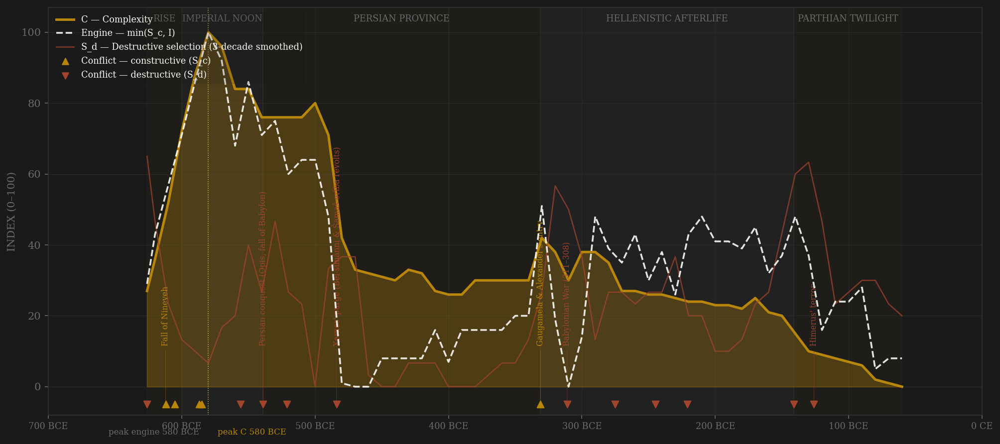
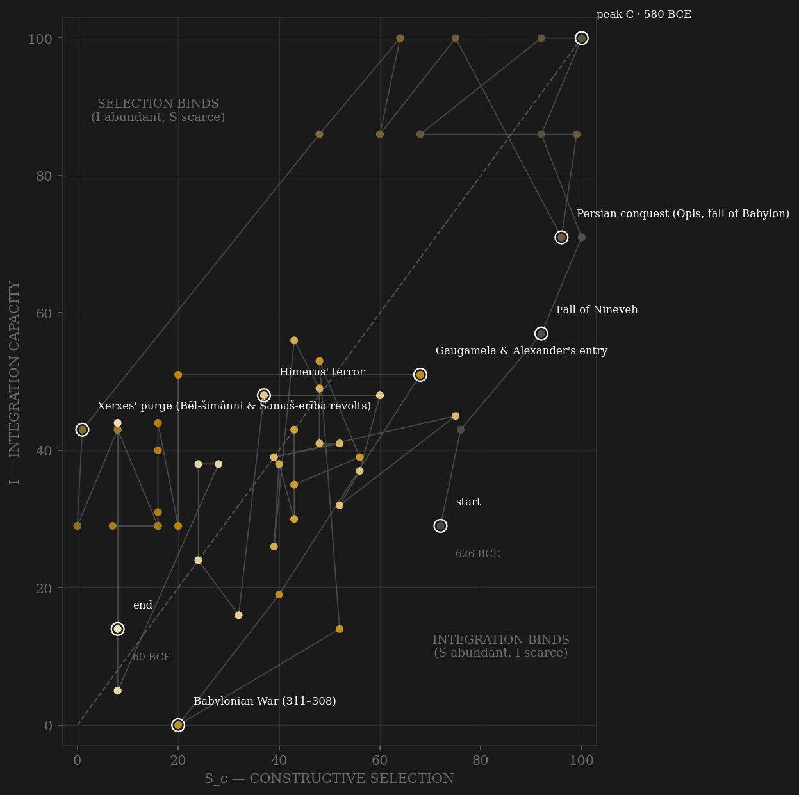

Babylon compresses the whole theory into ninety years and then spends four centuries as the control group. The liberation war of 626–620 is fought inside the core — sieges and famine in the home cities, S_d at the founding. Then the engine assembles at speed: a new-man dynasty opens elite entry, the prebend market — actual tradeable shares in temple office, the closest thing antiquity has to a market in elite positions — deepens through the Egibi generations, and external rivalry runs at the hard cap through Nineveh (612) and Carchemish (605). Complexity answers almost immediately: the 580s are the construction peak of the ancient Near East — the double walls, the Ishtar Gate, Etemenanki — with the city at Chandler's 200,000. Engine peak and C peak land on the same decade: SIMULTANEOUS, not the theory's 20–150 year lag, and the reason is visible in the ledger. The polity did not get to keep its engine long enough for a lag to express. Persia took the city in 539 with the machinery intact — Babylonian administrators stayed in post, and the long sixth century ran on — so integration and tablet output stayed high while selection pressure fell toward provincehood. Then 484: the Bel-shimanni and Shamash-eriba revolts and Xerxes' response — the purge of the north-Babylonian prebendary elite, the end of the great archives, the channel-A decay event. S_d and entropy hit their maxima; the coded complexity series drops by a third and never recovers. Everything after is afterlife, and the afterlife is MEASURED: from 385 the Astronomical Diaries give monthly barley and date prices — 1,508 observations, the oldest continuous market-price series in existence — and integration/entropy in the window are computed from them, not coded. The Diaries record the famine of the Babylonian War (311–308: decade-median barley 640 g silver per 1000 L, roughly eight times normal), the Ptolemaic incursion of 245, Himerus' terror in the 120s (median 278, volatility spiking), and the Parthian succession chaos of the 90s (CV 1.15) — each political rupture legible in grain prices twenty-two centuries before anyone called it high-frequency data.

The trajectory tells the imperial-decapitation story in one glance. Babylon enters mid-plot (war-forged selection, coordination battered by the liberation war itself), climbs both axes steeply through the Nebuchadnezzar decades, and reaches the upper-right corner — the only decades in the polity's life where both selection and integration run near their maxima. Then the path does something no organic decline produces: it slides LEFT along the top of the plot. Integration holds near 100 — Persia kept the administration, the temples, the tablet output — while constructive selection drains away, because a satrapy has no foreign policy and, after 484, no contested elite entry either. The 484 purge then drops the path vertically: the archives end, the prebendary families are out of office, and Babylon spends the fifth and fourth centuries pinned in the lower-left — a coordination shell without an engine, exactly the Liebig configuration the theory says cannot compound. The Hellenistic decades wobble the path (Antiochus IV's polis refoundation briefly reopens elite entry through the gymnasium roll), but each recovery is cut down by another war fought through the city — Diadochi, Ptolemaic, Parthian — and the trajectory dies against the origin, integration and selection both spent, while fourteen astronomers on temple salary keep recording the price of barley to the very end.
Coded by locus and target, never by outcome. Babylon's ledger is dominated by destructive selection for a structural reason: after 539 the polity has no external wars of its own — it is the terrain on which other empires fight. The hard case is 331: Gaugamela is coded S_c because the contest was external and the city's coordination machinery came through intact — Alexander courted the Esagila priesthood and ordered restoration, no sack, no purge. The clean opposite is 484: an internal revolt answered not by siege damage but by the surgical destruction of the city's own elite-coordination layer — the end of the archives is the S_d signature in the documentation itself. Where the measured window overlaps a coded S_d event, the Diaries corroborate blind: the 310s, 240s, 120s and 90s all show the price spikes and volatility bursts the coding predicts.
| YEAR | CONFLICT | CODE | CODING RATIONALE |
|---|---|---|---|
| 626 BCE | Nabopolassar's liberation war | Sd | Fought inside the Babylonian core — sieges and famine at Nippur, Uruk, Babylon; founding violence against the polity's own cities |
| 612 BCE | Fall of Nineveh | Sc | Peer-polity war carried to the rival's core; Babylon's machinery untouched |
| 605 BCE | Carchemish | Sc | External: Egypt broken on the Euphrates frontier |
| 587 BCE | Fall of Jerusalem | Sc | External imperial campaign; frontier discipline, core untouched |
| 585 BCE | Siege of Tyre begins | Sc | Thirteen-year external siege; rivalry with Egypt by proxy |
| 556 BCE | Palace regicides (Amēl-Marduk 560, Lâbâši-Marduk 556) | Sd | Succession violence at the polity's command core — two kings murdered in four years |
| 539 BCE | Persian conquest (Opis, fall of Babylon) | Sd | External origin, core penetration: massacre at Opis, dynasty decapitated — S_d at the fall, B-channel while approaching |
| 521 BCE | Nebuchadnezzar III/IV revolts crushed | Sd | Revolt and Persian re-siege of Babylon itself; Herodotus' impalements — violence at the coordination center |
| 484 BCE | Xerxes' purge (Bēl-šimânni & Šamaš-erība revolts) | Sd | The channel-A decay event: north-Babylonian prebendary elite purged from office, the great archives end — destruction aimed precisely at elite-coordination machinery (Waerzeggers) |
| 331 BCE | Gaugamela & Alexander's entry | Sc | HARD CASE: imperial contest at Babylonia's door, but no sack, no purge — Esagila courted, machinery intact; external locus, coded constructive |
| 311 BCE | Babylonian War (311–308) | Sd | Antigonus vs Seleucus fought through the core; MEASURED famine — decade-median barley 640 g Ag/1000L, ~8× normal (BCHP 3 + Diaries) |
| 275 BCE | Civic transfer to Seleucia | Sd | Population of Babylon ordered moved (BCHP 5) — administrative violence to the city's coordination centrality, no blood required |
| 245 BCE | Ptolemaic troops in Babylon | Sd | Third Syrian War reaches the citadel; slaughter recorded in BCHP 11 — war inside the city |
| 221 BCE | Molon's usurpation | Sd | Usurper seizes Babylonia, retaken by Antiochus III — in-core dynastic war |
| 141 BCE | Parthian conquest | Sd | Mithridates I takes Seleucia and Babylon; Demetrius II's counter-war fails through the same terrain — transition fought in-core (Diaries record it) |
| 126 BCE | Himerus' terror | Sd | Parthian governor burns city quarters, enslaves Babylonians (Diod. XXXIV/V.21; Justin XLII.1); MEASURED chaos — median 278, CV 0.66 |
| COMPONENT | GRADE | BASIS |
|---|---|---|
| PRICES → I & E in window | ● measured 385–61 BCE | van der Spek, Commodity Prices in Babylon 385–61 BC (Astronomical Diaries; Sachs & Hunger I–III) — 1,508 dated observations, six commodities, silver prices. IISH dataverse hdl:10622/VY7UY3, file 13648 (babylonia.xls), accessed 2026-07-06. I = −(0.5·z(log median barley price) + 0.5·z(CV barley+dates)); E = 0.5·z(shock share |Δln P|>0.4) + 0.5·z(CV); ≥4 barley obs per decade required, measured z-spliced onto coded backbone. Pre-385 I and E are ○ scholar-coded — the Diaries do not cover it, and the page says so. |
| S_c — Constructive (v2 contestability) | ○ coded, 3 channels, ledger | A 0.40 elite-entry: prebend-market liquidity (tradeable temple offices, Jursa 2010 ch.5), šatammu/kiništu entry (Boiy 2004), Persian incorporation post-539, the 484 EXCLUSION as channel-A decay (Waerzeggers AfO 50: 150–173), Antiochus IV politai/gymnasium · B 0.30 HARD CAP external war-years (near-zero 539–331: provincehood, not peace) · C 0.30 within-rules: temple–crown bargaining, kidinnu privileges, kiništu assembly politics, Nabonidus-vs-Marduk-priesthood contest. No deviation from 0.4/0.3/0.3. Per-decade cites: coding_ledger_v2.csv |
| Sc_v1_combat (frozen comparator) | ○ coded | Channel B alone — the combat-only series the v1 pages ran on, kept per AMENDMENT_S_definition_v2.md reporting rule |
| S_d — Destructive | ○ event-coded, price-corroborated | ABC 3–7, BCHP 3/5/11, Hdt III.150–159, Waerzeggers 2003/4, Diod. XXXIV/V.21, Justin XLII.1, Sachs & Hunger historical sections. Where the measured window overlaps (310s, 240s, 120s, 90s) the Diaries corroborate the coded spikes blind |
| I — Integration (pre-385) | ○ coded | Jursa 2010 long-sixth-century efflorescence; Hdt III.92 (richest satrapy); Stolper 1985 (Murašû); Boiy 2004 (Hellenistic royal economy). Measured from 385 (see PRICES row) |
| C — Complexity | ◐ coded ordinals + Chandler anchors | Mean of tablet-output ordinal (coded 0–10 from published documentation-density shape: Jursa 2010, Waerzeggers 484-cliff, Stolper, Oelsner 1986, Hackl 2013 — a coded rendering of published figures, NOT a pulled count table), construction ordinal (George 1992; Beaulieu 1989; Antiochus Cylinder; Boiy 2004), Babylon city population (Chandler/Modelski anchors) |
| R — Renewal | ◐ anchors + interpolation | Babylon CITY population in thousands (city convention, like Venice): Chandler/Modelski anchors −626:100, −600..−500:200, −400:150, −300:150; post-300 decline coded from Boiy 2004 (Seleucia drain, Himerus, twilight) — level uncertain, direction not |
| Temple archives (Eanna/Ebabbar) | ○ coding input only | Eanna dense 626–c.520 (ends by administrative reform, not violence); Ebabbar dense to 484 (ends at the purge). No published per-decade count table pulled — they inform the tablet ordinal and the 484 coding, ◐/○ as asked |
58 decade rows (founding row −626, then −620…−60) built by scripts/build_babylon_sicre.py; audit trail in components_audit.csv, per-decade citations in coding_ledger_v2.csv, full provenance with URLs and access dates in SOURCES.md. THE MEASURED SLOT IS FILLED: the van der Spek Astronomical Diaries price file WAS obtained (IISH dataverse hdl:10622/VY7UY3, datafile 13648, accessed 2026-07-06; iisg.nl/hpw/babylon.php redirects there) — I and E are price-measured 385–61 BCE and scholar-coded before that, graded accordingly on this page. Frozen-protocol lag (3-decade centered rolling mean, engine=min(S_c,I)) under BOTH definitions: v2 contestability engine −580 → C −580 = +0 SIMULTANEOUS; v1 combat engine −590 → C −580 = +10 SIMULTANEOUS. Babylon is not a lag pass and is not counted as one: the engine was destroyed exogenously (539 decapitation, 484 elite purge) before a lag could express — it enters H-LAG-001 as SIMULTANEOUS under both definitions. Rebuild: build_babylon_sicre.py, then polity_report.py --slug babylon